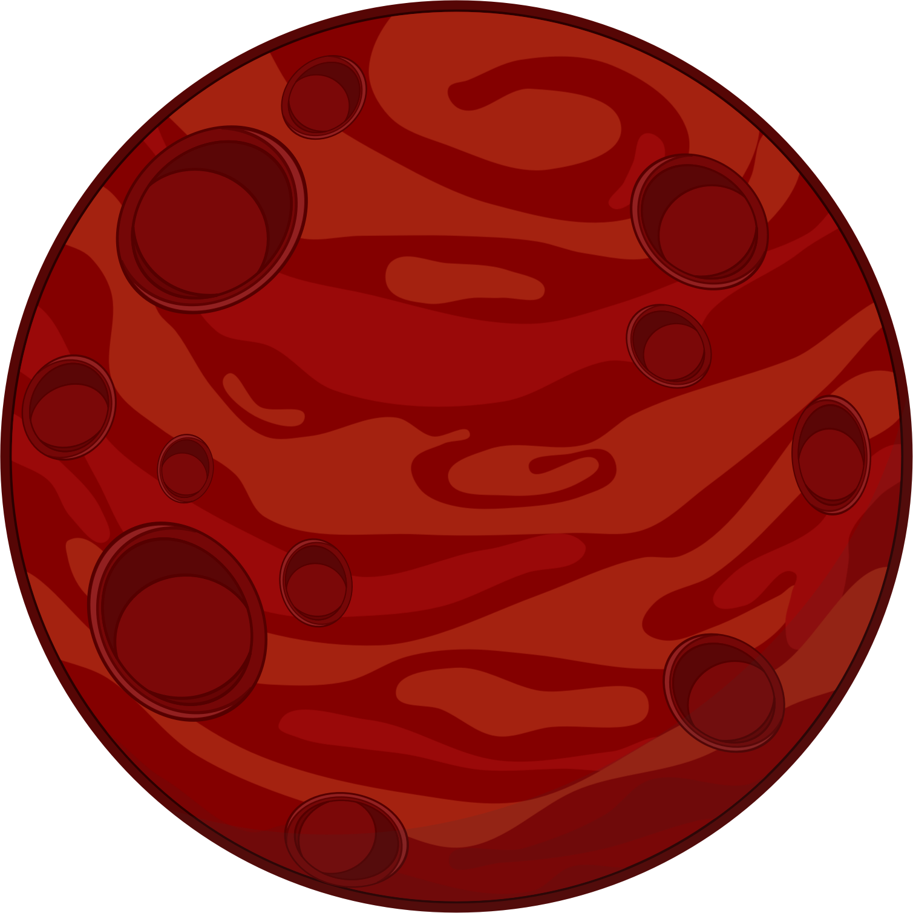
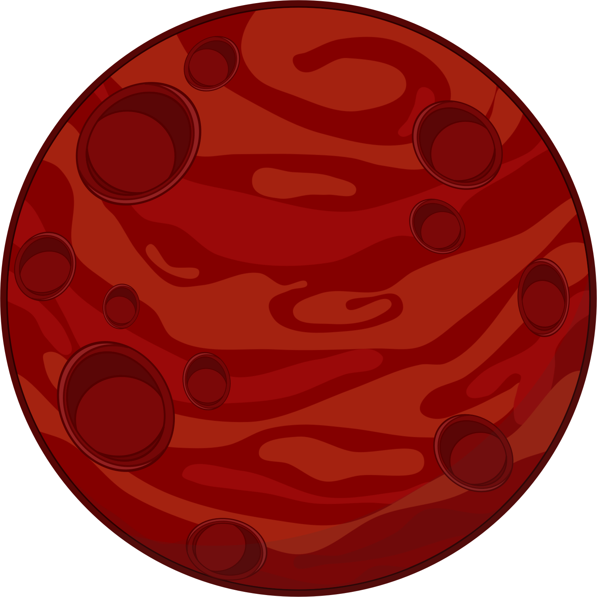
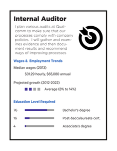
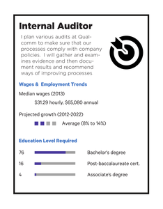
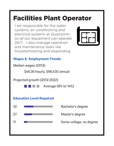

It’s a beautiful spring day and you’ve just finished a rather boring day at school.
You have a lot of homework and soccer practice after school, so you are eager to get home. As you are heading towards the bus, a couple of your friends invites you to get ice cream with them. If you go with them, you’ll be late going home and might not be able to finish your homework before soccer practice.

Like any other day, you get onto the bus.
As you climb into the bus, you notice that your regular bus driver is missing. There’s something strange about the substitute bus driver, but you can’t quite put your finger on exactly what it is. You decide to ignore the slightly uneasy feeling and continue to the back of the bus. Lucky you! You find an empty seat all to yourself. You get into the seat and stretch out. The bus starts moving and you look out the window at the familiar path. However all of a sudden the bus morphs into a rocket. “Excuse me, I don’t think this is the right way home!” someone yells to the bus driver.
“We’re taking a bit of a detour today. I have some students whose regular bus broke down on a field trip to Pluto! We are going to rescue them. Don’t worry! This is a supersonic bus. It can travel at 10 times the speed of light.” the bus driver replies. Hmm... 10 times the speed of light. You do some quick calculations and realize it’ll only take you an hour to get to Pluto and back. You decide to sit back and enjoy the ride. I mean, how often do you get to go into space? After a few minutes, the bus driver lands the bus. You look outside the window and see red everywhere. Out of the corner of your eye, you notice a booth.
“Are we already there?” one of the sixth graders in the front of the bus asks.
“Not yet! We’re on Mars. We have to pay a toll to pass the asteroid belt,” says the driver as she goes inside the little booth.
Some of the kids go outside to stretch their legs, and you decide to follow. You’re standing around marveling at how red everything is, when an alien approaches you. “Earthling! I need your help!” says the little green creature as he approaches you. Just as you are about to respond, the driver comes back.
“All aboard!” the bus driver shouts, “This bus is leaving for Pluto now.” The bus driver notices you and the alien and then adds,
“We’ll be back in 40 minutes if you’d like to stay here until then.”
 

You decide to stay and help the little green creature.
You follow the alien for a couple minutes until a large crater comes in view. You hear booming voices echo as you go closer.
“No! A garden would be much better here! This soil is the best on this planet.”
“Dude, listen to these acoustics. We need to build an amphitheater here!”
“What’s going on?” you whisper to the alien leading you.
“These two can’t decide whether to build a garden or an amphitheater here. Since you are from the advanced civilization of Earth. They have agreed to abide by your decision.”
As you approach the crater, the two aliens wave you over. “Look at all the nutrients in this soil. We could make a great garden here,” one of them tells you.
“Think about how awesome it would be to have a concert here! It’ll sound amazing,” the other one tries convincing you.
“Well, what do you think we should build here?” the head alien asks.

“Hmph,” the other alien huffs away, but accepts your decision.
You start walking back to the bus stop, when the head alien speaks up, “I wonder if you could help us with a couple other disputes, Earthling.” You look at your watch and decide you still have a bit of time until the bus comes back.
“Sure,” you agree. The head alien takes you to a school. Ugh. You just got out of school, but not wanting to be rude, you hide your dismay. The head alien takes you the principal’s office, where a green student and a blue student are sitting in their chairs, looking angry.
“You two!” The head alien calls the students over. “These two are locker neighbors and won’t get along at all. Tell this earthling about your problem.”
“I can never get my binders between my classes because she’s always hanging out with her friends, blocking everything. I need to stop at my locker between every class, because it is very important to my organization.”
“Oh my god. This girl is such a drag,” the blue student interrupts, “I just want to hangout with my friends before lunch. She doesn’t have to stop at her locker between every class! A couple of times a day would do it.”
After listening to both situations, you:

Upon hearing your decision, the alien you ruled against gets really angry.
She starts shaking and fire comes out of her hands. The alien charges straight for you ...
All of a sudden you wake up in your bed. It was all just a dream.
But here are some dreams that never have to go away:

You decide to continue the journey and explore Pluto.
However, after sitting for a while, you realize that the ride is getting a bit boring. You rummage into your backpack for something to do, but only find some plastic and cardboard. You look around and realize that everyone else looks a bit bored too.
To pass the time you:

You decide to have a contest and everyone loves the idea.
Everyone starts discussing about how the winners will be chosen.
You suggest the winner should be chosen by

Since you suggested using a judge, a few people ask if you’ll judge the contest.

Since you suggested using a voting system, a few people ask if you’ll keep score.
You decide to participate in the contest.
Everyone takes a few minutes to practice their rendition before performing. You get really into your piece during the rehearsal and make an interpretive dance to go along with the song. As you’re dancing, you accidentally hit the emergency handle on the window next to you and it bursts wide open.
You try to grab onto the seat in front of you, but just miss it and fall through the opening. You’re falling fast towards Saturn and you are about to hit the ground...
When all of a sudden you wake up in your bed. It was all a dream!
But here are some dreams that never have to go away:
As you're preparing, you realize you are going to need some paper for this task and move to reach into your bag.
As you bend down, you accidentally hit the emergency handle on the window next to you and it bursts wide open.
You try to grab onto the seat in front of you, but just miss it and fall through the opening. You’re falling fast towards Saturn and you are about to hit the ground...
When all of a sudden you wake up in your bed. It was all a dream!
But here are some dreams that never have to go away:
You pull out some paper from your backpack to draw out some plans from the telescope.
You spend some time drawing out your plans. After a while you look up and notice the guy sitting in the seat next to you is also trying to make a telescope. You already have a pretty good blueprint for the telescope and it doesn’t look like he knows what he’s doing. However, if you work with the guy, you might be able to finish the telescope in time to see Saturn’s rings on the way back.
Do you
Just as the bus is approaching Pluto, you finish your telescope.
As the bus begins its descent, you use the telescope to view the surface of the tiny ex-planet (Pluto used to be a planet). A couple of kids notice your telescope and marvel over it.
Everyone wants a turn in using it.
You decide to make more telescopes for your classmates.
You reach into your bag for some more supplies, when you accidentally hit the emergency handle on the window next to you and it bursts wide open.
You try to grab onto the seat in front of you, but just miss it and fall through the opening. You’re falling fast towards Pluto and you are about to hit the ground...
When all of a sudden you wake up in your bed. It was all a dream!
But here are some dreams that never have to go away:
You decide you won’t make another telescope but will let everyone look through yours.
As you motion your classmates over, you accidentally hit the emergency handle on the window next to you and it bursts wide open.
You try to grab onto the seat in front of you, but just miss it and fall through the opening. You’re falling fast towards Pluto and you are about to hit the ground...
When all of a sudden you wake up in your bed. It was all a dream!
But here are some dreams that never have to go away:
As you walk down the sidewalk, the sun beats down and the ice cream seems like a better decision every second.
You’re joking with your friends as you turn the last corner before arriving at the ice cream shop. As you approach the shop, though, it becomes obvious that something is not right. Despite the heat of the day, it seems like the shop is closed. The lights are all out, no one is inside, and there are no cars in the parking lot. Your friends all groan in disappointment, but then you notice that the door isn’t actually closed. Curious, you and your friends decide to investigate, and you push open the door slowly. Looking around as you make your way to the counter, you have second thoughts about whether you should even be there. Something feels… wrong. And that’s when the world goes black, and your feet drop out from under you! You can hear screams of surprise surrounding you, letting you know that you’re not the only one who is falling through the space. When you finally land with an oomph, you look around. Absolute blackness surrounds you. You know that you need light, but the only thing you have that’s flammable is your sweatshirt.
Do you:
Once there’s firelight to push out the darkness, you look up and around curiously.
You seem to have fallen through a sinkhole into a huge tunnel. The hole you just came through is at least 20 feet above your head, so you and your friends decide to walk down the tunnel and try to find another way out. The tunnel gets narrower and narrower until you’re in a single file line. And that’s when you see it -- the light at the end of the tunnel. Excited at the prospect of getting out, you pick up the pace, and before you know it, you’re back in sunlight. But the sunlight reveals a world you’ve never seen before. You’ve just emerged from one mountain of many, and there’s green grass everywhere. As you and your friends are trying to figure out where you are, none of you notice the figure that has slowly crept closer. When you finally see the hooded shadow, you jump in surprise.
“Who are you and what do you want?” you ask loudly.
The figure stops and throws back the hood. Underneath is the most beautiful face you’ve ever seen, and yet, also the saddest face. You then notice a pair of pointed ears. An elf! you think.
"I a-am a friend. And I need your help. D-do you know what music is?” the elf stutters, obviously nervous.
You and your friends exchange a look before you answer. “Yes, of course we all know what music is.”
The elf’s face lights up in happiness at the news. “Will you come to help my people?” he asks in excitement.
“What’s wrong with them?” you ask in confusion.
“Well… our king hates all things musical, and so no one is allowed to listen to or play music, and slowly all elves are losing happiness,” he explains sadly. “The entire city is turning gray, and I was sent on a journey to find our saviors who could convince our king to allow music and teach us how to be happy again.”
“Uhhh, we --”, you began to reply, when a second hooded figure jumps out of a nearby bush.
Caught off guard by the sudden appearance of another person, your heart skyrockets for a moment before it calms down.
The second hooded figure, much shorter than the first, throws the hood back, and you’re confronted with a dwarf!
“No, you can’t leave with him!” the dwarf insists. “My village needs your help far more -- the bridge connecting the two halves of our city has collapsed, and we need a replacement ASAP. Please help. You’re taller than two of our tallest people put together.”
You and your friends exchange a confused look, but after a few minutes of consulting, you decide to split up.
Do you:
As you leave with the elf, you find out his name is Elhir, and he was sent on a mission by the queen to find people who know music.
She could tell that the lack of music was killing the kingdom, but the king refused to listen to her suggestions to bring it back. As a last resort, she sent out 10 elves to try to find anyone who had any knowledge of music, hoping that an outsider could convince the king when she could not.
Elhir leads you up a windy mountain path, up and up until you are breathing hard. Just when you’re about to give in and ask for a break, you see it: the glimmering white towers that stand above more beautiful white buildings. As you get closer, you realize that the buildings that looked so pristine and white from a distance are actually worn down and gray, with cracks covering the foundation. Elhir keeps up a fast pace as you look around, and soon you’re at risk of losing him among the twisty turning roads. Right as you’re about to turn the corner, you confront a crying elfin child and see Elhir disappear around. The young girl elfin looks so sad, and her eyes quiver with more tears as she moves out of your way.
Do you
You kneel down next to the little girl, unsure how to get her to stop crying. You try to talk to her, but she just keeps crying in little sniffles and sobs.
Do you:
She’s entranced by the strange-sounding syllables of English, and she stops crying long enough for you to coax a smile out of her.
When you show her your ‘weird’ ears, she giggles again, and you watch her wander away.
By the time you’ve looked up again, you remember that you let Elhir get away, and now you’re lost in a city you’ve never visited or even heard of before.
Do you:
She’s entranced by the crisp folds of paper that have made this piece of art, and she stops crying long enough for you to hand the flower over and coax a smile out of her.
When you show her your ‘weird’ ears, she giggles again, and you watch her wander away.
By the time you’ve looked up again, you remember that you let Elhir get away, and now you’re lost in a city you’ve never visited or even heard of before.
Do you:
As you wander, you begin to think you really should have asked for directions.
You begin to think every corner looks the same, and soon you’re hopelessly lost. As you start to make circles, you realize that you’ll be taken to see the king if you break the law about music. So you pull out your phone and start playing music as loudly as you can. At first, everyone around you just stares in amazement at your courage (or stupidity), and then the music hits them and they smile for the pleasure of listening. But as predicted, a group of heavily armored soldiers come to take you to the king.
They arrest you and soon enough you’re in the King’s presence.Only when you’re kneeling before the king in chains, do the guards quickly retreat to stand by the exit. The king slowly walks over. “So… this is the troublemaker that has caused such an uproar in my kingdom.” You say nothing.
The king continues, “Whatever shall I do with you? Why were you singing?”
And still you say nothing, knowing that you have to make the right move or risk making the king even angrier.
You finally decide to respond, saying, “I believe that music is an intrinsic part of a happy life.” And then the king promptly throws you into his dungeon.
The cell is despair, and you’re dreading what will happen tomorrow. Will you be stuck in this dark, gloomy dungeon forever?
As you start to imagine what the rest of your days will look like... you all of a sudden wake up in your bed.
But here are some dreams that never have to go away:


These career paths were chosen from your top two RIASEC characteristics: Enterprising and Social
It takes a while, but you finally find someone who knows English.
Once you have directions to the castle, you get stuck at the gate. You can’t manage to convince the guards that you have a reason to see the king, so you’re stuck outside. Just as you’re about to give up and leave, you see Elhir leaving the castle. You shout and wave to get his attention, and when he finally sees you, the shock is written all over his face. He quickly comes over, ordering the guard to open the gate. Once inside, he grabs your arm and drags you through a maze of hallways, not saying a word in response to the many questions you shoot at him. He finally dumps you into a chair and says one word: “Wait.”
He calls the king in, but then quickly leaves before any confrontation. You tentatively look up at the king, who seems angry for some reason. Then, you hear it. Your phone is ringing, One Direction filling the room and the king has heard it. His face gets more and more red, and you cut him off. “Music heals all wounds. Please, just listen.” And somehow, the king listens. And he enjoys.
Music is declared legal once again, and the people rejoiced, celebrating loudly in the streets… and then you wake up in your bed.
But here are some dreams that never have to go away:
 

{kind=link}

These career paths were chosen from your top two RIASEC characteristics: Social and Enterprising
You jog a bit to catch up with Elhir after you turn the corner, and then you look up and see a castle in the distance, bigger than any building you’ve ever seen before.
When you reach the gate, you suddenly realize that you’re not dressed to meet a king. Awkwardly self conscious, you slow down and Elhir turns around to usher you forward. The gates clang shut behind you.
When you reach the throne room, you’re nervous and sweating at the thought of meeting the king dressed in jeans and a casual t-shirt. But when the king walks in, he barely acknowledges your clothing. Instead, he’s fascinated by your round ears. You’re suddenly struck with inspiration on how to get the king to listen to music. If you tell him your headphones made your ears round, you could get him to try them on! But what if the music on your phone isn’t good enough? Should you compose an amazing original piece to win the king over?
Do you:
The king hates it!
He throws your phone across the room and it shatters against the wall. He’s shouting in elvish, and you run from the room, not looking back to see if anyone is following. As you escape back into the city, you again notice the sadness that is written on all the elves’ faces, the gray gloom that surrounds the city. And so you blast music from your phone, singing along as loudly as you can. The city comes alive in front of you, smiles bursting forth on everyone’s faces.
They start cheering for you, and you stop to bask in their happiness. ...and then you wake up in your bed.
But here are some dreams that never have to go away:


These career paths were chosen from your top three RIASEC characteristics: Realistic and Artistic and Enterprising
The king loves it!
He immediately invites you to become the official royal musician, and gives you treasures beyond your wildest dreams. He demands that you play in front of as many people as possible, and you can see the transformation before your eyes.
The elves thrive with the music, dancing to the beat and cheering for you as you perform ... and then you wake up in your bed.
But here are some dreams that never have to go away:

{kind=link}

These career paths were chosen from your top three RIASEC characteristics: Artistic and Social and Conventional
As you leave with the dwarf, you find out his name is Dwon.
He was sent to find help, since the previous bridge had been constructed by the villagers, and it had collapsed not too long after it was built. The bridge is the center of dwarvish society because that’s how the two biggest dwarvish villages are connected. You have a bit of physics background, so you decide that you can help them redesign it. If you do the blueprints and get started on building, then the entire process would go quickly. Then, you think it might be better if you teach the dwarves how to solve physics instead of just solving it for them. Unfortunately, Dwon is the only dwarf that speaks English, so if you decide to teach them, you will have to spend a lot of time translating and teaching.
Do you:
Progress is going super well until about half-way through building the bridge.
That’s when the you realize that there aren’t enough supplies to finish the bridge. Unfortunately, the dwarves do not have extra supplies readily available in either village either. Dwon comes up with the idea of hosting a bake sale for travelers passing through. The other dwarves agree that’s probably the fastest way to make money, so both villages mobilize to make the bake sale a reality.
Do you
You’re in charge of cracking all the eggs, and you go through carton after carton.
Once the eggs have run out, you’re assigned to mixing duty, and you quickly tire out your arms while you’re mixing the dough for all the pastries and desserts. When your arms are too exhausted to move another inch, you pass off mixing duty to a dwarf and head outside for a quick break. As you walk outside, you notice a glint of something shining in the dirt. Kneeling down, you pick up a small diamond, staring at it in wonder. Then, still kneeling, you see another glint in the dirt, just a little farther out. You crawl over only to find another gem, this time a sapphire. Then, as you look around, you see more and more precious jewels lying in the dirt. As you frantically crawl around trying to collect them, you call over the dwarves to help. Your money problems are solved!
...and then you wake up in your bed.
But here are some dreams that never have to go away:


These career paths were chosen from your top three RIASEC characteristics: Realistic and Social and Enterprising
You’re much more comfortable handling money and convincing people to buy baked goods than you would be in a kitchen, and it shows.
Sales go through the roof in the first few hours, and before you know it, there’s enough money for the rest of the bridge, and then some! After you finish the bridge, the dwarves insist on giving you the extra money from the bake sale, and so you head out on your merry way with a pocket full of money
...and then you wake up in your bed.
But here are some dreams that never have to go away:


These career paths were chosen from your top two RIASEC characteristics: Realistic and Enterprising
Check out these cool resources!